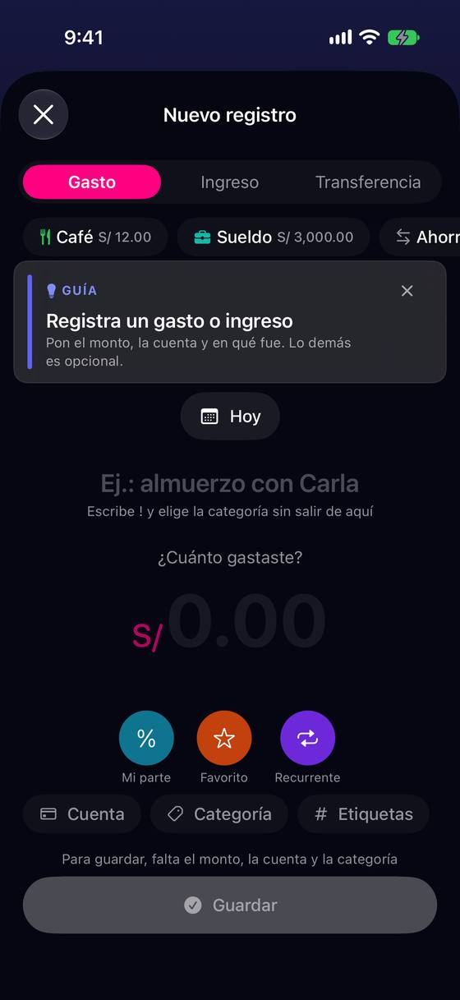
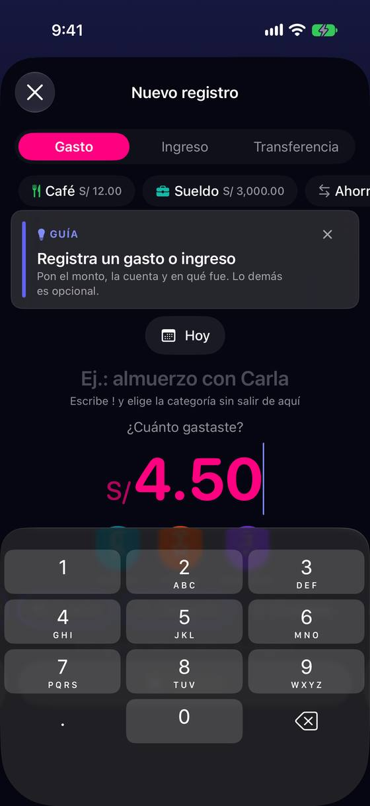
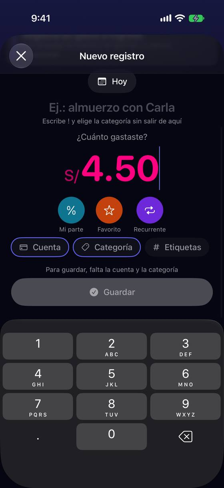
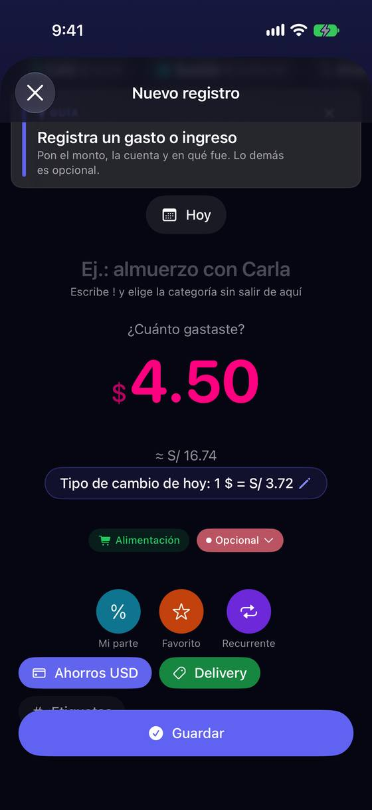
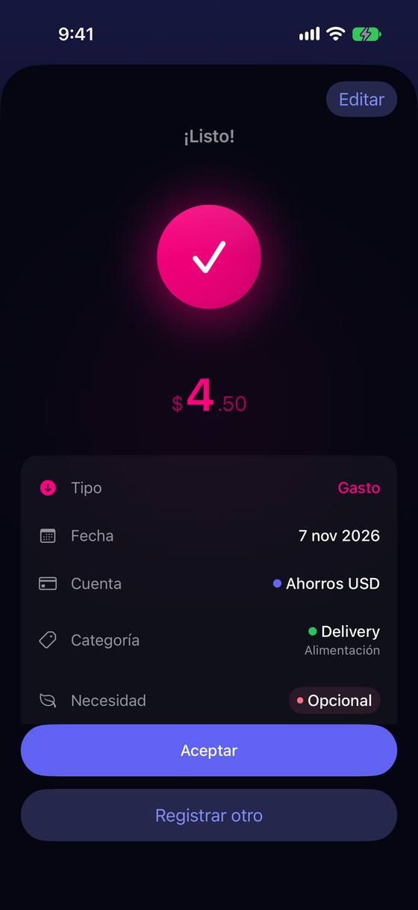

Con el teclado abierto, lo que falta y «Guardar» quedan debajo: el café cuesta 10 gestos
Hoy
Capturas del simulador (app de origin/2.3, semillas de prueba). Pasos hoy: 6 toques + 4 teclas con la cuenta puesta (8 + 4 con dos cuentas sin usar; +1 «Aceptar» en los 3 primeros).






De dónde sale
- Captura Capturas 02 y 03: abre sin teclado; con 4.50 escrito, el teclado cubre todo lo que hay debajo del importe.
- Captura Captura 04: hay que subir el formulario para ver «Cuenta», «Categoría» y «Guardar» sobre el teclado.
- Código
NewTransactionView.swift:494-498y:2420-2438: con teclado, «Guardar» vuelve al final del contenido; sin teclado, fijo abajo. - Código
AppPreferences.swift:365:autoFocusField = .nonepor defecto; se cambia en Ajustes › Personalización. - Código Sin barra de teclado (
ToolbarItemGroup(placement: .keyboard)) niscrollDismissesKeyboarden el formulario. - Captura Capturas 07 y 09: con la guía arriba, la línea «Para guardar, falta…» se monta sobre el chip «Etiquetas» y «Guardar» lo tapa a medias (bug, ver «Encontrado»).
Las opciones
De 3 a 5 alternativas con el mismo caso. Desliza cada recorrido; el anillo cian marca dónde toca Ana.
Una barra sobre el teclado con lo que falta y «Guardar»
Mientras el teclado está abierto, encima de él va una barra fina con los chips que faltan y «Guardar». Tocar «Categoría» abre su hoja; al volver, la barra ya dice «Guardar» y se puede guardar sin cerrar el teclado. Los chips del formulario no se tapan: la barra los sustituye mientras se escribe.
A favor
- Lo que falta y el botón están siempre a la vista, con o sin teclado.
- Es un patrón de iOS (barra de accesorios del teclado): nada que aprender.
- No vuelve el problema de L2: la barra no tapa los chips, los reemplaza mientras se escribe.
En contra
- Quita 44 pt de pantalla con el teclado abierto: en un iPhone SE el importe queda justo.
- Con texto grande la barra tiene que caber: dos chips y el botón, o solo «Falta: Categoría ›».
«Siguiente» te lleva a lo que falta
Sobre el teclado, un solo botón grande que dice qué sigue: «Siguiente: Categoría ›». Lo toca y se cierra el teclado y se abre la hoja de categorías; al elegir, el formulario queda completo con «Guardar» abajo, fijo.
A favor
- Guía al principiante paso a paso sin otra pantalla.
- Funciona con texto grande: un solo botón ancho cabe siempre.
En contra
- Impone un orden (importe → categoría → guardar) a quien quiere otro.
- Si no falta nada, el botón tiene que pasar a ser «Guardar», y ese cambio puede sorprender.
Mientras escribes, el formulario se compacta
Con el teclado abierto se esconden la guía, la descripción y los tres círculos; quedan el importe, los chips y «Guardar» justo encima del teclado. Al cerrar el teclado, vuelve todo.
A favor
- No añade piezas: reordena lo que hay.
- El café se guarda sin cerrar el teclado.
En contra
- La pantalla cambia de forma al abrir y cerrar el teclado: puede marear (hay que respetar «Reducir movimiento»).
- En un SE con texto grande ni así caben importe, chips y botón.
Un teclado de Yala con categorías y «Guardar»
El importe no usa el teclado del sistema sino uno propio, más bajo: números, una fila con las categorías más usadas y la tecla ✓ que guarda. Es el patrón de las apps de gastos «de bolsillo».
A favor
- El camino más corto posible: importe, categoría y guardar sin salir del teclado.
- Permite sumar (+) varios importes de un ticket.
En contra
- Es otro teclado: VoiceOver, texto grande, teclado físico del iPad y pegar hay que rehacerlos a mano.
- El cambio más grande y el que más prueba pide.
Lado a lado
La última pantalla de cada recorrido, frente a hoy.
Comparación
| Opción | Pasos para el caso (maqueta) | Esfuerzo | Riesgo | Reabre |
|---|---|---|---|---|
| Hoy | 6 toques + 4 teclas con la cuenta puesta (8 + 4 con dos cuentas sin usar; +1 «Aceptar» en los 3 primeros). | — | — | — |
| G1 · Una barra sobre el teclado con lo que falta y «Guardar» | 4 toques + 4 teclas | medio | bajo | — |
| G2 · «Siguiente» te lleva a lo que falta | 4 toques + 4 teclas | bajo-medio | bajo | — |
| G3 · Mientras escribes, el formulario se compacta | 4 toques + 4 teclas | medio | medio | — |
| G4 · Un teclado de Yala con categorías y «Guardar» | 3 toques + 4 teclas | alto | alto | — |
Lente de perfiles
Perfiles simulados, no entrevistas Los siete perfiles de la revisión del usuario nuevo, usados como lentes. riesgo alto de trabarse · medio · bajo.
| Perfil | Hoy | G1 | G2 | G3 | G4 |
|---|---|---|---|---|---|
| P1 · Migrante de Excel | cierra el teclado en cada registro | apunta seguido sin cerrar el teclado | el orden fijo le estorba al apuntar seguido | — | suma tickets |
| P2 · Principiante abrumado | no ve «Guardar» ni qué falta | ve qué falta | lo lleva de la mano | lo que desaparece le despista | teclado raro |
| P3 · Anotador rápido que no lee | 10 gestos para un café | 4 toques | — | — | el más corto |
| P4 · Experto de otra app | sin tecla de cerrar | — | prefiere elegir el orden | — | — |
| P5 · Llega por una invitación de grupo | apunta poco | — | — | — | — |
| P6 · Varias monedas y tarjeta | — | la moneda sigue sin verse en la barra | — | — | — |
| P7 · Texto grande, a veces en iPad | con texto grande el teclado tapa aún más | la barra tiene que adaptarse al texto grande | un botón ancho | no cabe con texto grande | accesibilidad a rehacer |
Recomendación: G1
La barra sobre el teclado deja a la vista lo que falta y «Guardar» sin cambiar el formulario ni el orden, es un patrón de iOS y baja el café a 4 toques si además el teclado abre solo en el importe. G2 es más guiado pero impone un orden; G3 no aguanta el texto grande; G4 es el más corto pero obliga a rehacer accesibilidad.
Qué decide Jürgen
- ¿Barra sobre el teclado (G1) o botón «Siguiente» (G2)?
- ¿El formulario abre con el teclado en el importe por defecto (hoy «No abrir»)? Sin eso, cualquier opción suma un toque.
- ¿La pantalla «¡Listo!» de los 3 primeros registros (L2-5) se queda tal cual?
Revisión por vistas 2.3 · Nuevo registro. Maquetas en HTML con datos ficticios: no son la app. Pasos contados sobre las maquetas; los de «Hoy», en el simulador o en el código citado.